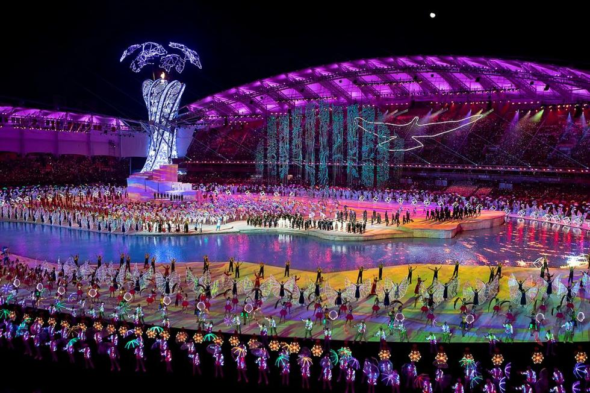

Did the Military World Games Spread COVID-19?
Wikimedia Commons
Opening ceremonies of the seventh Military World Games, in Wuhan, China, October 18, 2019
WASHINGTON – Less than a month before data shows the first Chinese citizen became ill with coronavirus, nearly 300 members of the U.S. military, Department of Defense, and support personnel attended the 2019 Military World Games in Wuhan, China.When the games ended, they returned to at least 219 home bases in 25 states, without ever being screened for possible COVID-19 infection.
According to the Pentagon, there was no reason to do so then, or subsequently.A spokesperson issued a terse email response to the question, saying there was no screening because the event—held from October 18 to 27, 2019—'was prior to the reported outbreak.'
The spokesperson cited December 31, 2019, as the critical outbreak day and that no testing was deemed necessary for any possible exposure prior to February 1, 2020.
Since that email, Pentagon officials have repeatedly declined to speak on or off the record regarding the subject.
Contrary to the Pentagon’s insistence, however, an investigation of COVID-19 cases in the military from official and public source materials shows that a strong correlation exists in COVID-19 cases reported at U.S. military facilities that are home bases of members of the U.S. team that went to Wuhan.
Before March 31, when the Pentagon restricted the release of information about COVID-19 cases at installations for security reasons, infections occurred at a minimum of 63 military facilities where team members returned after the Wuhan games.
A strong correlation exists in COVID-19 cases reported at U.S. military facilities that are home bases of members of the U.S. team that went to Wuhan.
Additionally, the U.S. team used chartered flights to and from the games via Seattle-Tacoma International Airport.Washington was one of the earliest states to show a spike in COVID-19.
'I do think that it is a concern that these people were not tested, especially going into an area that might be a center, a huge probability,' Dr. Ravina Kullar, an infectious diseases expert and epidemiologist based out of Santa Monica, California, said in an interview.
'It may have happened before December, that is the unknown factor,' Kullar said.'We still don’t know who is patient zero.The Chinese government is not being transparent enough.'
Kullar is with Expert Stewardship, Inc., a company that promotes infection prevention in long-term care facilities.She is also a member of the Infectious Diseases Society of America, a medical association representing physicians, scientists, and other health care professionals who specialize in infectious diseases.
She stressed that the Chinese have not cooperated with the international community in sharing critical information, which is one more reason the Pentagon should have tested the athletes.
'I feel strongly about going with a high prevalence to get tested,' she said.
New data continues to emerge that COVID-19 had already infected people in Wuhan in mid- or early November of 2019, weeks after the games’ conclusion.Recent research released from Harvard and Boston University suggests COVID-19 might have been present in China as early as last August, well before the illness was first publicly identified in Wuhan on December 31.
Athletes who participated from other nations—both U.S. allies like France and Italy and adversaries like Iran—have reported suffering from COVID-19 symptoms.Some Iranian athletes died from COVID-19, including some who were in Wuhan, according to news reports not verified by Tehran.
The Pentagon’s reluctance to test athletes returning from Wuhan was not unique.No other nation’s military appears to have tested their participants in the 2019 World Military Games specifically for COVID-19.French doctors examined their athletes upon their return from the games as part of overall exams.
When asked why the athletes and support staff who had been in China were not screened as a precaution once the COVID-19 threat was known in January, Defense Secretary Mark Esper said at the end of an April 14 press conference: 'I am not aware of what you are talking about.'
The question and response were not included in the Pentagon’s official written transcript of the briefing, as is the normal procedure.The official video of the briefing goes silent when the question is asked and Esper can be seen—but not heard—reacting to the question.
The full audio and video exchange remains on the C-SPAN video of the event.
This video file cannot be played.(Error Code: 102630)
Replay
Related Videos
Foreground: Foreground Opacity: 100% Background: Background Opacity: 100% Font: DefaultSans SerifSerifMonospaceCursive Size: 20
TEXT SAMPLE
Save Changes
As of June 5, there were 10,462 COVID-19 cases in the Department of Defense in the military, civilian, dependent, and contractor categories.As of June 12, 2020, there have been 36 deaths linked to COVID-19 among those groups.
The delegation to Wuhan included 188 athletes, 24 coaches, 18 team captains, 15 medical providers, 10 referees, nine public-affairs officers, seven 'senior leaders,' nine CISM (International Military Sports Council), and two State Department personnel, according to DOD documents.
Spokespersons for the various service branches, all of which were represented in Wuhan, either declined to comment on the subject or said that no COVID-19 screening was required for anyone with possible exposure prior to February.
The 2019 Military World Games, branded the 'Peace Games,' was the largest military sports event ever held in China.More than 9,000 athletes representing the militaries of more than 100 countries competed in 27 sports, ranging from golf to parachuting.
The issue of testing the athletes and support personnel, who spent weeks preparing for and participating in the games at what is generally acknowledged as ground zero for COVID-19, has grown in importance since medical reports have questioned the official start date for the outbreak.A handful of global news outlets have highlighted the issue.
Scores of athletes from other nations, including France and Italy, who participated in the games reported symptoms consistent with COVID-19 upon their return to their home countries.In retrospect, some doctors said those athletes suffered from COVID-19 and in some cases infected others, according to news reports.
French athletes’ concerns that they were infected by COVID-19 while participating in the games have been called 'completely plausible' by Eric Caumes, an infectious and tropical disease specialist at the Pitié-Salpêtrière hospital in Paris.The French delegation, made up of 406 athletes and support staff, 'benefited from medical checks before and during the games with a dedicated medical team made up of about 20 people,' the French military said, according to news reports.
It said that 'the epidemic linked to COVID-19 was not known at the time' and that 'there were declared cases with the army health service of flu or of hospitalizations during or after returning from the games that could be linked to cases of COVID-19.'
French Olympic silver medal–winning pentathlete Elodie Clouvel and her boyfriend fell ill after taking part in the Wuhan games.Asked on local TV channel Television Loire 7 on March 25 if she was worried about the prospect of potentially having to spend the summer in Japan for the Olympics, Clouvel said, 'No because I think that with [Valentin Belaud, her partner] we have already had the coronavirus, well the COVID-19.'
Clouvel, 31, went on to explain: 'We were in Wuhan for the World Military Games at the end of October.And afterwards, we all fell ill.Valentin missed three days of training.Me, I was sick too … I had things I had never had before.We weren’t particularly worried because no one was talking about it yet.'
She added, 'A lot of athletes at the World Military Games were very ill.We were recently in touch with a military doctor who told us, ‘I think you had it because a lot of people from this delegation were ill.’'
Scores of athletes from other nations who participated in the games reported symptoms consistent with COVID-19 upon their return to their home countries.
Renowned Italian fencer Matteo Tagliariol told
Corriere della Sera newspaper that he fell ill almost immediately after his return from Wuhan:
'When we arrived in Wuhan we almost all got sick,' said Tagliariol.'But the worst was the return home.After a week I had a very high fever, I felt that I wasn’t breathing,' added Tagiariol, 37.'The sickness didn’t even go away with antibiotics, I recovered after three weeks and remained debilitated for a long time.Then my son and my partner got sick.When they started talking about the virus, I said to myself: I got it too.'
Ironically, the Chinese government has accused the U.S. military of importing COVID-19 to China during the Wuhan games—feeding disproven rumors that the virus was there simultaneously with the athletes.
The U.S. came in 35th in the Military World Games, behind nations like Iran, Finland, and Slovenia.In the final competition of the games, Air Force Reserve Major Judith Coyle of Joint Base Lewis-McChord finished the triathlon in 2:10:48 to win a gold medal in the women’s senior division and lead her mixed senior team to a silver medal.
This article was supported by the Economic Hardship Reporting Project .
Posted On: 2020-06-30T00:00:00
Posted By: Tom Squitieri

Content Date: 2020-06-30
Download Date: 2021-05-13
Document ID: L0C04C326